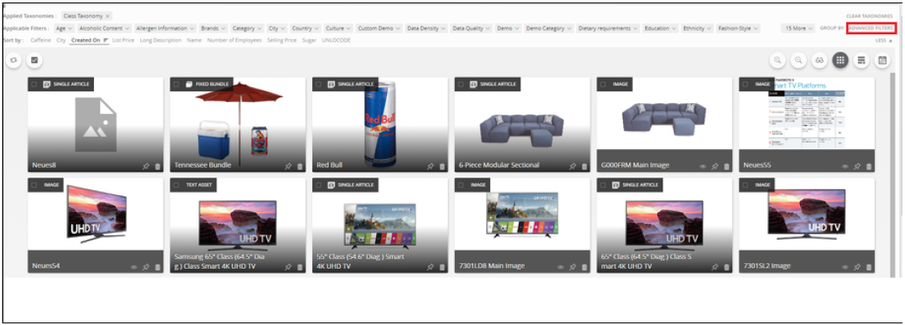

Parametric Search¶
- Click on the Advanced Filter on the right side to the top.

Click on the Advanced Filter on the right side to the top.
- Select an Attribute for example List Price

Click on the Advanced Filter on the right side to the top.
- Click on the drop down list of the Contains Button, a list with multiple values will be visible. Select the appropriate operator.
Click on the Advanced Filter on the right side to the top.
- Select the appropriate operator (eg. Greater than), based on the attribute the units can be selected from a drop down list and then select the value and Click Apply
- Based on the Search criteria the Search Result will be displayed. The search criteria will be displayed in the Applied Filter section as shown in the image.
- Multiple properties(attributes/tags) can also be used for better and narrowed down search.
- Multiple criterias can be applied for a single property as well with a OR operation.